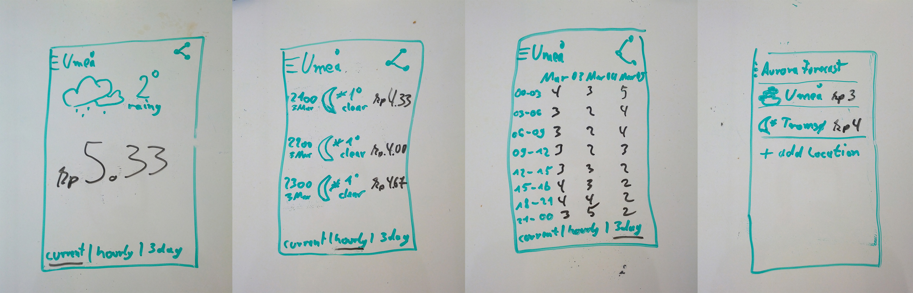

For about one year I was living in Umeå, Sweden. From time to time you have the chance to see the Northern Lights there. There are a few Northern Lights forecast websites, but those are not very mobile friendly. And the existing mobile applications are overblown with information and very unnecessary graphics. I decided to design my own Northern Lights forecast application. I focused on the necessary information and left out all the rest. The result is very simplistic.
